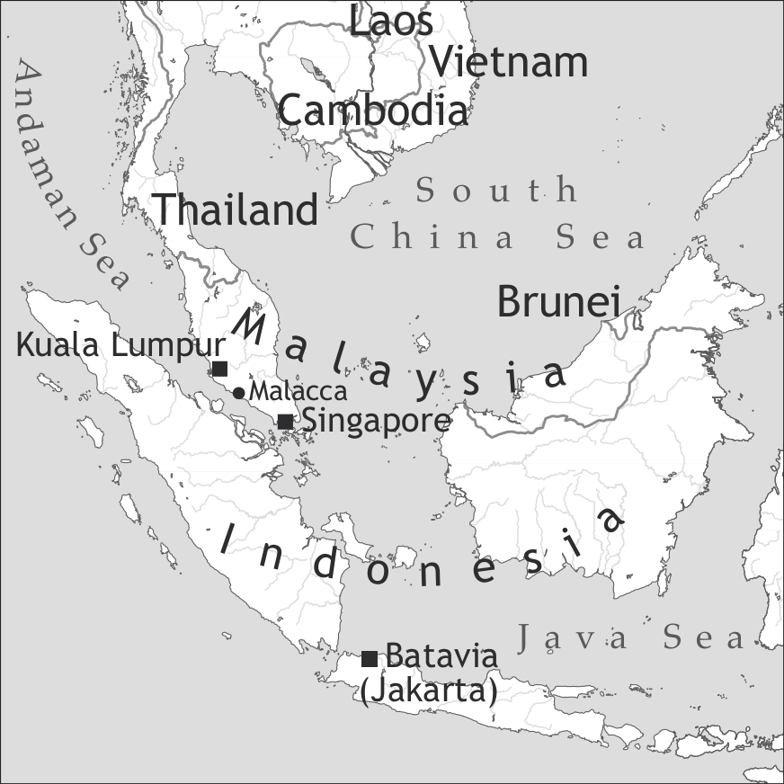

by Philippe Maurer

Batavia Creole is an extinct language formerly spoken in the city of Batavia (now Jakarta) in what is now Indonesia. The only source for this language is an anonymous pedagogical grammar, published in Batavia in 1780, the Nieuwe Woordenschat. This pedagogical grammar was intended for Dutch newcomers to Java who wanted to learn Batavia Malay or Batavia Creole. It is arranged in three columns: the first in Dutch, the second in Malay, and the third in Creole. It contains word lists (about 1,420 lexical entries, including the words contained in the texts), some texts (about 1,330 words), and a small grammar section. This pedagogical grammar was the source for Schuchardt’s 1891 Kreolische Studien IX on the two Malayo-Portuguese varieties of Batavia and Tugu.1 Examples will be cited after Maurer (2011), which is based on these two publications. Besides this, Hancock (1972) analyzes Dutch-derived items in Batavia and Tugu Creole, Maurer (2003) presents a preliminary analysis of tense, aspect, and mood markers in Batavia Creole, and Maurer (2004) deals with object marking in Batavia and Tugu Creole.
Since Batavia Creole is an extinct language and there is only one source for it, the description given here is merely tentative, even more so in cases where in the corpus there are very few examples illustrating a particular feature. There are also some features for which information is lacking (e.g. the form of the second person plural adnominal possessive).2
The aforementioned variety of Tugu is very close to Batavia Creole; in some cases examples from this variety will be cited in order to illustrate some features which are lacking in the Batavia corpus, or which differ significantly from it.
The city of Jakarta was founded in the fourth century CE and called Sunda Kelapa until 1527 when it was renamed Jayakarta. After the Dutch destroyed the city in 1618, they rebuilt it in 1619 and named it Batavia. When the city was occupied by the Japanese in 1942, its name was changed again to Jakarta.
The Portuguese never occupied Batavia, which means that the Portuguese-based creole of this city must have been brought to Batavia from abroad. Many slaves brought to Batavia by the Dutch came from South India. However, Batavia Creole’s closest relatives are not the South Indian Portuguese creoles, but Papiá Kristang, spoken in Malacca (Malaysia) (see Baxter 2012 in this volume), and Macao Creole, spoken in Macao (China).
The Portuguese Creole community held an important position in Batavia because of two factors: the role of the city as the centre of commercial, maritime and military operations for the Dutch East India Company and the importance of the Portuguese lingua franca in the regions of Asia controlled by this company (Huet 1909: 163).
The Dutch tried to impose the Dutch language on the Creole-speaking community, but without success: according to a document dating from 1674, this was due in great part to the Dutch themselves, who preferred to speak Creole to the slave population (Huet 1909: 170f.). But the Dutch also thought that Portuguese was a good means to fight Catholicism, as the Portuguese Creole community was Protestant, not Catholic (Schuchardt 1891: 3; see also Huet 1909: 150, fn 1).
According to a letter written in 1708 by the Dutch priests, who preached in Batavia Creole, this language was spoken, among others, by the following groups (Schuchardt 1891a: 5f., Huet 1909: 153f.):
- by the slaveholders and their children when interacting with the slaves and indigenous Christians;
- by families and people coming from Siam, Malacca, Bengal, the Coromandel coast, Ceylon, the Malabar coast, Surat, and Persia;
- by slaves coming from the Indonesian Archipelago;
- by other people who acquired it from the contact with the above groups.
Batavia Creole was a flourishing language during the 17th century, but the decline started in the second half of the 18th century, when it was progressively replaced by Malay, especially in the Protestant Church whose last Portuguese-preaching priest died in 1808. The Portuguese and Malay churches were eventually united in 1816 (Schuchardt 1891: 7 and Huet 1909: 164). Note, however, that the Nieuwe Woordenschat was published in 1780, so at that time Batavia Creole must still have been widely spoken. But at the end of the 19th century, Batavia Creole was an extinct language (Schuchardt 1891: 20).
Batavia Creole was in contact with many other languages. The most important were Malay, Javanese, and Dutch. At the time that Batavia Creole was spoken, there was also an important Chinese community in Batavia. Besides this, there were also speakers of South Indian languages, as mentioned in the previous section.
The spelling used in the original document, the Nieuwe Woordenschat, was based on 18th-century Dutch and, to a lesser extent, on 18th-century Portuguese spelling, which was very inconsistent; for instance, the word siu ‘sir’ was spelled in twelve different ways: zioe, sioe, zijoe, siö, sio, sïoe, sijoe, cioew, sijoew, cijoew, cieoew, cioe.
In Maurer (2011: 7), a unified spelling system was adopted, which will also be used in this article. Graphemes which differ from IPA symbols are indicated in angle brackets in Table 2.
Since there is no information on pronunciation (nor on stress or intonation) in the Nieuwe Woordenschat, the vowel and consonant inventories presented here are hypothetical.
Batavia Creole possesses five vowels, as presented in Table 1.
|
Table 1. Vowels |
|||
|
front |
central |
back |
|
|
close |
i |
u |
|
|
mid |
e |
o |
|
|
open |
a |
||
Besides these five vowels, there is also a schwa (written <ë>), which has no phonological status since there are no minimal pairs contrasting it with other vowels. The schwa occurs above all between a stop and a liquid in final position, as in albër ‘tree’, dentër ‘inside’, or otër ‘other’, but also in pre- and posttonic position (from a Portuguese or Dutch point of view), as in sumbërˈsela ‘eyebrow’ or ˈspigëlu ‘mirror’. Note, however, that in many cases there are allomorphs without schwa: albi, dentru, otru, spiglu.
The consonant system consists of 18 consonants and 2 glides, as shown in Table 2.
|
Table 2. Consonants |
|||||||
|
bilabial |
labio-dental |
dental/alveolar |
alveo-palatal |
palatal |
velar |
||
|
plosive |
voiceless |
p |
t |
k |
|||
|
voiced |
b |
d |
g |
||||
|
nasal |
m |
n |
ɲ <ny> |
ŋ <ng> |
|||
|
tap/trill |
r |
||||||
|
fricative |
voiceless |
f |
s |
||||
|
voiced |
v |
||||||
|
affricate |
voiceless |
ʧ <ch> |
|||||
|
voiced |
ʤ <dj> |
||||||
|
lateral |
l |
ʎ <ly> |
|||||
|
glide |
w |
j <y> |
|||||
There is variation between /f/ and /p/ due to the influence of Malay, which lacks the phoneme /f/. In some cases, etymological /f/ is replaced by /p/, as in e.g. saprang ‘saffron’ (< Dutch saffraan, Portuguese açafrão) or supri (< Portuguese sofrer) ‘to suffer’; inversely, /p/ is replaced by /f/ in e.g. fetu (< Portuguese peito) ‘chest’ or fonti (< Portuguese ponte) ‘bridge’.
The phoneme /ʎ/ is very rare; it occurs e.g. in eskaravelyu ‘beetle’ or koelyu ‘rabbit’. Portuguese /ʎ/ is generally depalatalized: Portuguese filha > fila ‘daughter’ or mulher > moler ‘woman’. There are some cases of variation between /b/ and /v/ in words of Portuguese origin, as in bida ~ vida ‘life’ (< Portuguese vida) or kubri ~ kuvri ‘cover’ (< Portuguese cobrir). In coda position, /ŋ/ is very frequent, but it is rare between vowels. In words of Portuguese origin, it occurs in unga ‘one’ and lungar ‘moon’, derived from Early Modern Portuguese ũa ‘one (f.)’ and lũar ‘moonshine’. In words of Malay or Javanese origin, it occurs e.g. in albër bringin ‘banyan tree’ or dringu ‘calamus’.
Like Malay, Batavia Creole lacks the phoneme /z/. Portuguese /z/ has become /ʤ/ in Batavia Creole: Portuguese casar /kɐzar/ > kadja /kaʤa/ ‘get married’ or Portuguese mesa /mezɐ/ > medja /meʤa/ ‘table’. The change from Portuguese /z/ to Creole /ʤ/ is unique to Batavia and Tugu Creole; Papia Kristang and Macao Creole lack it.
This phonetic change is certainly due to Malay and Javanese influence, since in these languages the same phonetic change has taken place, as can be seen in meja (Malay) and méja (Javanese) ‘table’, or kemeja (Javanese) ‘shirt’< Portuguese camisa.
Batavia Creole possesses two glides: /j/ and /w/. The following rising diphthongs occur: /ja/ in papagaya ‘parrot’, /jo/ in tayoli ‘rabble’, /ju/ in kayu puti ‘melaleuca’, /wa/ in klewang ‘short sword’. Falling diphthongs are rare: /aj/ as in may ‘mother’, /ej/ as in reynu ‘kingdom’, /oj/ as in noyba ‘bride’, /aw/ as in kawdu ‘turtle’, /ew/ as in chapew ‘hat’, and /iw/ as in friw ‘cold’.
The most frequent syllable types are open syllables, with or without syllable onset, simple or complex: o-bi ‘hear’, a-mo-re-la ‘kind of plant’, ga-vi-nyo-tu ‘praying mantis’, bru-si-du ‘hatred’, fle-su ‘bottle’, sni-pis ‘snipe’, or skra-bu ‘slave’. Closed syllables are not infrequent: al-tu ‘high’, pot-lod ‘pencil’, bong ‘good’, bring-ka ‘play’, or smit ‘smith’.
The noun is invariable in most cases. Natural gender is usually indicated analytically through separate words such as omi ‘man’ vs. moler ‘woman’, as in irmang omi ‘brother’ vs. irmang moler ‘sister’, or by masculine and feminine suffixes (-o vs. -a) taken from Portuguese, as in dona ‘grandmother’ vs. donu ‘grandfather’.
If number is expressed, it is done by reduplication, which in most cases is total:
It is only with filu ‘child, son’ that the reduplication is partial:
Expression of plurality does not occur if the noun is modified by a numeral, and it is not obligatory in other contexts:
There is no definite article different from the demonstrative, but the distal demonstrative akel may fulfil the function of a definite article:
Note that in the text from which this example is taken, this is the first occurrence of ondra ‘honour’. This shows that the demonstrative akel functions as a definite article here. The indefinite article corresponds to the numeral ung or unga:
The adnominal demonstratives iste or esta ‘this’ and akel ‘that’ precede the noun (see example 10 below) and exhibit a distance contrast; however, as noted above, the distal akel also fulfils the function of a definite article. The two adnominal demonstratives may also be used as pronominal demonstratives:
In the Tugu variety, the adnominal demonstratives may precede or follow the noun:
The pronominal possessives are all formed with the possessive marker sua, which corresponds to the possessive of the third person singular. The adnominal possessives all precede the noun and show an irregular pattern. The possessive of the first person singular minya (derived from the Portuguese feminine adnominal possessive minha ‘my’) as well as two variants of the second person singular (bos and vose) are formed without sua, in contrast to the others which are all formed with sua, as shown in Table 3.
|
Table 3. Possessives |
||
|
adnominal |
pronominal |
|
|
1sg |
minya |
minya sua |
|
2sg |
bos ~ vose ~ vose sua |
bose sua |
|
3sg |
su ~ sua |
sua |
|
1pl |
nosotër sua |
nosotër sua |
|
2pl |
--- |
vosotër sua |
|
3pl |
ilotër sua |
ilotër sua |
The numerals precede the noun and are all of Portuguese origin:
1 unga 2 dos 3 tres 4 katër 5 singku
6 ses 7 seti 8 oyti 9 nobi 10 des
11 ondji 12 dodji 13 tredji 14 katordji 15 kindji
16 dises 17 diseti 18 disoyti 19 disnobi 20 binti ~ vinti
Adjectives are invariant and usually follow the noun, as in alfada kumpridu ‘long pillow’. Bunitu ‘nice’ may precede or follow the noun: bunitu sapatu vs. sapatu bunitu ‘nice shoes’. In the case of ‘blue’, which can be realized as blaw (< Dutch) or adjul (< Portuguese), the adjective retains its position from the European lexifier: ung blaw safir vs. ung safir adjul, both ‘a blue sapphire’.
There is not much information about the comparison of the adjective. The comparative of inequality is formed with mas ‘more’ as in mas altu ‘higher’, with one suppletive form milor ‘better’ for bong ‘good’, and for the superlative, pangkadu ‘blow (n.)’ is used, as in ung pangkadu altu ‘the highest’ and ung pangkadu bong ‘the best’.
Dependent and independent personal pronouns do not differ substantially, as shown in Table 4.
|
Table 4. Personal pronouns and adnominal possessives |
||||
|
dependent pronouns |
independent pronouns |
adnominal possessives |
||
|
subject |
object |
|||
|
1sg |
eo |
kung eo |
eo |
minya |
|
2sg |
bos ~ bose ~ vose |
per bose |
vos ~ bose |
bos ~ vose ~ vose sua |
|
3sg |
ile ~ ele |
kung ile |
ile |
su ~ sua |
|
1pl |
nos ~ nosotër |
--- |
nos |
nosotër sua |
|
2pl |
vosotër |
--- |
--- |
--- |
|
3pl |
ilotër ~ ilotor |
--- |
--- |
ilotër sua |
Since object pronouns are realized as prepositional phrases, there is no difference between them and the subject pronouns or the independent pronouns. However, there is a difference between the adnominal possessives and the personal pronouns in the first person (minya vs. eo) and the third person singular (su vs. ile).
As for the structure of the noun phrase, all determiners precede the noun, and all the modifiers of the adjective precede the adjective. With a few exceptions, the adjective follows the noun; the relative clause always follows the noun.
The Batavia Creole verb is optionally modified by four tense and aspect markers (see Table 5). The verb may also be left unmarked.
|
Table 5. Tense and aspect markers |
|
|
sta ~ ste |
imperfective aspect |
|
dja |
perfective aspect |
|
logo ~ lo |
affirmative future |
|
nada |
negated future |
The imperfective marker sta ~ ste is used for present and past progressive as well as habitual situations. That is, Batavia Creole has no possibility to express past tense in the domain of imperfectivity:
The perfective marker dja may modify verbs which refer to a past situation with (12) or without (13) present relevance, or to a past-before-past situation (13):
The future marker lo(go) may modify verbs that refer to future as well as to future-in-the-past situations:
The following example illustrates the use of the negated future marker nada:
The zero-marked verb may have present imperfective or past perfective reference and constitutes an alternative to the overt aspect markers:
With stative verbs, the zero marked verb may have present or past reference:
It is not clear to what extent the imperfective marker sta ~ ste grammaticalized from an originally progressive marker into a general imperfective marker. Example (11) above shows that it does not fulfil exclusively progressive functions, but there are no examples of stative verbs being modified by sta ~ ste; this holds also for verbs with generic reference:
Since the Batavia corpus is very limited, the absence of examples which illustrate sta ~ ste modifying stative verbs or verbs that refer to generic situations may be due to chance.
An analogous problem is found with negated sentences. In other South East Asian Portuguese based creoles, the aspect markers may not co-occur with the verb phrase negator. In the Batavia corpus, there are only a few examples of negated sentences, all without aspect marker, as in the following example, where the aspectually unmarked verb refers to a present progressive situation:
But again, the fact that there are no examples where sta ~ ste or dja co-occur with the negator may be due to chance.
To sum up, the tense and aspect system of Batavia Creole is characterized by a future vs. nonfuture temporal distinction, and a purely aspectual distinction in the domain of the present and the past in affirmative sentences (lo ~ logu vs. sta ~ ste and dja). In negated sentences, there is also an opposition between future vs. nonfuture, but in this case there seems to be no aspectual marking in the domain of the present and the past (nada vs. Ø). Furthermore, the overt marking of aspect in affirmative sentences does not seem to be obligatory.
The verb phrase negator is nungku (< Portuguese nunca ‘never’), as in example (22); some stative verbs have prefixed nung- (with different allomorphs, like nom- or non-):
Four verbs refer to deontic modality and to ability, as in Table 6.
|
Table 6. Modal verbs |
||
|
deontic modality |
ability |
|
|
obligation |
misti ‘must, have to’ |
|
|
necessity |
odju ~ udju ‘should’ (Tugu) |
|
|
possibility |
podi ‘can’ |
podi ~ poy ‘can’ sabi ‘can’ (Tugu) |
The verb misti ‘must’ is derived from the Portuguese noun mister ‘necessity, need’:
This modal expression found its way into different Portuguese-based creoles as well as into some non-creole languages, cf. Cape Verdean mesti ‘need, have to’, Principense mêsê ‘want, love’, Papiamentu mester ‘need, have to; certainly’, or Malay (Bahasa Indonesia) mesti ‘certain, surely; must, have to’.
The verb odju is also of nominal origin; it is derived from Portuguese uso ‘usage’ and occurs only in the Tugu corpus:
The following example illustrates the original meaning of odju ~ udju:
Deontic possibility (permission) is expressed by podi ‘can’:
There are no examples of physical participant-internal ability in the Batavia corpus, but participant-external ability is also rendered by podi ~ poy ‘can’:
It is not possible to state how mental participant-internal ability was expressed in Batavia Creole, but in Tugu Creole, the verb sabi ‘know’ was used:
In the Batavia and Tugu corpus, there are no examples of epistemic uses of the modal verbs.
Volition is expressed by kere ‘want’:
The possessive verb teng, derived from Portuguese 3rd person singular present tem ‘s/he has’, functions also as a copula, used in all contexts:
The verb teng also expresses the existential:
In the Batavia corpus, there are some rare examples of nominal predicates without a copula, but only with the noun predju ‘price’:
In the Tugu corpus, the absence of the copula teng is frequent. The following examples illustrate the absence of copula with a predicative noun phrase (37) and with a predicative locative phrase (38):
Serial verbs are rare in the Batavia corpus. The verb da ‘give’ is used with verbs of communication:
There are also examples of the repetitive torna, derived from the Portuguese tornar a fazer ‘do again’. However, the position of torna differs from its Portuguese etymon in that it follows the verb:
An instance of a take-serial is given in the following example, with lanta ‘raise’ as the serial verb:
Batavia Creole has SVO word order:
Subject inversion occurs with non-agentive intransitive verbs like parsi ‘appear’:
The subject is not marked for case, whereas the direct and indirect objects are usually marked by the preposition kung ‘with’ or, less frequently, by the preposition per ‘for’, especially in case of personal pronouns, or if the noun refers to a human noun (differential object marking). In such cases, the direct object precedes the indirect object.
However, the marking of the human noun is not obligatory:
There is no morphological passive voice, but the direct object of a transitive verb can be promoted to subject position. In these cases, the subject of the transitive verb is deleted:
In the Tugu variety, there is passive morphology borrowed from Malay:
Reflexive voice is expressed either by korpu ‘body’ or by sua mesmu ‘oneself’, as in lava korpu ‘wash (oneself)’ and engena sua mesmu ‘betray oneself’.
Causative voice is formed with the verb fadji ~ fay; the only example found in the Batavia corpus concerns an adjective:
Reciprocal voice is formed with unga ‘one’ in subject position and with otru ‘other’ in object position:
Polar questions may (52) or may not (53) be introduced by the interrogative particle ki (also meaning ‘what’), which parallels Malay apa ‘what; interrogative particle’:
The most frequent interrogative pronouns used in content questions are ki ‘what’, ondi ~ undi ‘where’, ki ora ‘when (literally ‘which hour’)’, parki ‘why’, and kilay ~ klay ‘how’, whereby the interrogative phrase is moved to the left:
The only example in the corpus illustrating a focus construction implies the left-dislocation of the focussed argument, followed by the relativizer ki:
The coordinating conjunctions in the corpus are e ‘and’ and mar ‘but’.
Object clauses are headed by ki with declarative verbs, epistemic verbs, perception verbs, wishes, and experiencer expressions such as fala ‘say’, apusta ‘bet’, da intindi ‘explain’, obi ‘hear’, bensua ‘hope’, or nonteng kontenti ‘dislike’. There are no examples in the corpus for volitive verbs such as ‘want’ heading a finite object clause. Indirect polar interrogative clauses are headed by kantu ‘if’:
The conjunctions heading adverbial clauses found in the corpus are eti ‘until’, kantu ‘when, if’, and kilay ~ kley ‘like’:
Relative clauses are headed by ki for subjects and objects; undi is used in locative relative clauses, and kel is only found in an example where it is embedded in a possessive prepositional phrase headed by di:
The reduplication of nouns expresses plural (see example (1) above); in some rare cases, reduplications of nouns are lexicalized loans from Malay: chumi-chumi ‘squid’ (< Malay cumi-cumi), kupu-kupu ‘butterfly’ (< Malay kupu-kupu), or albër lobi-lobi ‘kind of tree’ (< Malay lobi-lobi). There is only one genuine Batavian lexicalized reduplication: kote-kote oru ‘golden rosary’ (< kote ‘seed’, oru ‘gold’).
With verbs it has an intensifying function, as in pasa bira bira korpu ‘stroll about’ (literally ‘go turn turn body’) or bringka bringka olu ‘twinkle with the eye’ (literally ‘play play eye’).
The only productive derivational morphemes are the past participle -du and the action noun -mentu. The past participle can be used attributively, as in karni kudji-du ‘cooked meat’ or predicatively, as in (61).
The following examples illustrate action nouns in -mentu: intindimentu ‘intelligence’ (< intindi ‘understand’), kadjamentu ‘marriage’ (< kadja ‘marry’), parsimentu ‘face’ (< parsi ‘appear’).
A relatively frequent type of compounding in Batavia (as well as in Tugu) is the compounding with lugar ‘place’, which parallels Malay tempat ‘place, receptacle’: lugar di beber ‘tavern’ (literally ‘place of drinks’), lugar di kandia ‘chandelier’ (literally ‘place of candle’), or lugar di mostardi ‘mustard-pot’ (literally ‘receptacle of mustard’).